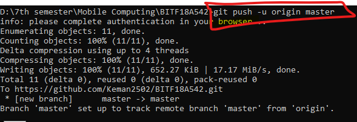

What is Github?
GitHub is a web-based interface that uses Git, the open source version control software that lets multiple people make separate changes to web pages at the same time. GitHub allows multiple developers to work on a single project at the same time, reduces the risk of duplicative or conflicting work, and can help decrease production time. With GitHub, developers can build code, track changes, and innovate solutions to problems that might arise during the site development process simultaneously.
Learn how to Push Data in Github.
Follow this Step:
1- Create an account

Create an account on github.If you already have an account on github then sign in.
2- Create Repository
Once you signed in, create a repository.

On the new repository screen, you need to give this repository a special name to generate your website.

After giving a unique name tp your repo you need to specify weather you want to creat a read me file or not and then click on button Create a repository

3- Git Clone
git clone is a Git command line utility which is used to target an existing repository and create a clone, or copy of the target repository.
- When you create a repo, you will get a link of your reository
- Copy that url
- Open you terminal.
- Go to the location whereyou want to create a folder. for example cd Documents/Practice
- write command 'git clone 'paste copied url''
4- Create files
- After cloning, a folder is created.
- Inside that folder, create files and start working on your project.
5- Git PUSH
1- Initialize the git repository.

2- Check git status

3- Add the file to the new local repository.

4- Commit the files staged in your local repository by writing a commit message.
5- Add the URL copied, which is your remote repository to where your local content from your repository is pushed.

6- Push the code in your local repository to GitHub
7- View your files in your repository hosted on GitHub.
Finished.